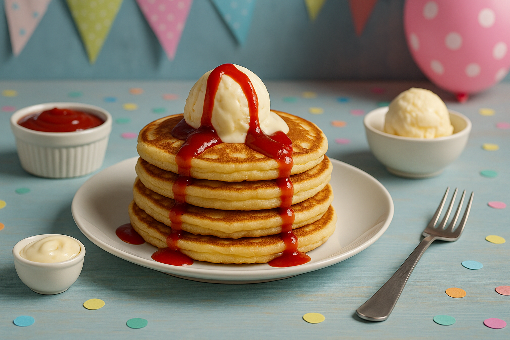
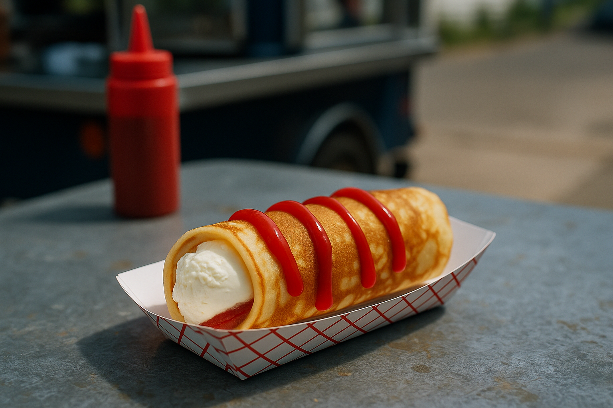

Ketchup och vaniljglass-pannkakor
En smakexplosion där varm pannkaka möter kall glass och sötman bryts av med ketchupens syrliga tomattoner. En dessert-och-måltid-hybrid som verkligen överraskar den modiga smakresenären.
Ingredienser
- 3 dl vetemjöl
- 6 dl mjölk
- 3 ägg
- 1 msk smör
- 4 kulor vaniljglass
- 1 dl ketchup
Så här gör du
- Stek pannkakor.
- Lägg glass i mitten.
- Ringla ketchup över och vik ihop.
Serveringsförslag
- 
- 